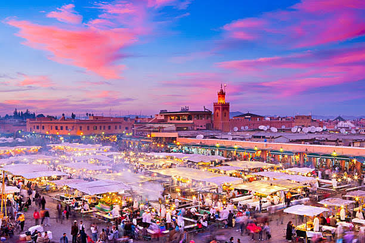

Histoire de Marrakech
Marrakech a été fondée en 1070 par les Almoravides, sous le règne de Youssef Ibn Tachfine. Elle est devenue une ville importante et une capitale de plusieurs dynasties marocaines. Au fil des siècles, Marrakech a connu un grand développement dans les domaines de l'architecture, du commerce et de la culture. La ville possède de nombreux monuments historiques, comme la mosquée Koutoubia, les remparts, les palais et les anciennes médinas. Elle est également connue pour ses traditions, son artisanat et son patrimoine culturel. Aujourd'hui, Marrakech conserve son charme historique et attire des visiteurs du monde entier. Elle représente un symbole important de l'histoire et de la civilisation marocaine.
